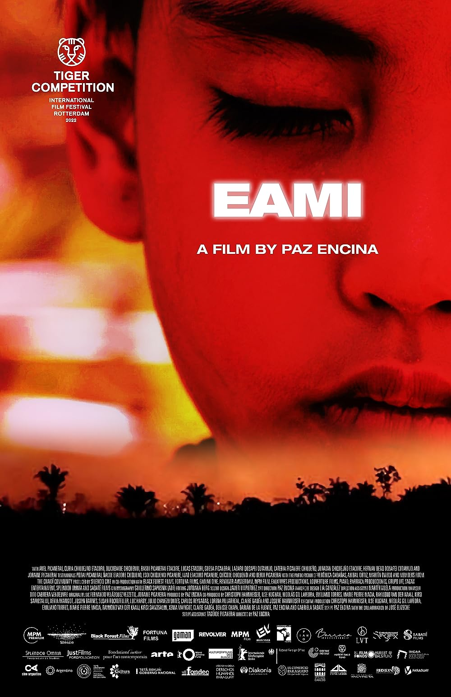

Cinemateca Capitólio visitar
- 
EAMI
Paraguai / EUA / Alemanha / Holanda / Argentina / França / México, 2022, 83 minutos, DCP
Horários: 15:00h Sala de Cinema
A Asoja é a mulher-deusa-pássaro que transmuta seu espírito. Ela era um tigre, ela era uma planta, ela era uma onça e hoje ela é uma menina (Eami) que deve curar sua dor. Eami é uma história sobre pessoas deslocadas. É a memória de um povo que deve migrar de seu lugar de origem – […]
Mais informações 
Depois de ser Cinza
Brasil, 2020, 98 minutos, DCP
Horários: 17:00h Sala de Cinema
Três mulheres (Elisa Volpatto, Branca Messina e Silvia Lourenço), de histórias completamente distintas, têm uma coisa em comum: amaram e se relacionaram com o mesmo homem. Sob o ponto de vista destas mulheres, através de uma estrutura intrincada de idas e vindas no tempo, vem à tona a história de Raul (João Campos).
Mais informações
Mirante
Brasil, 2019, 80 minutos, DCP Na sessão do dia 29/08, será realizada uma intervenção musical de Vagner Cunha.
Horários: 19:00h Sala de Cinema
Um jovem desenvolve o costume de admirar as pessoas que passam pelas ruas do centro de Porto Alegre através da janela de sua casa. No entanto, transformações na política brasileira fazem com que antigas feridas sejam reabertas. De repente, ele encontra dificuldades em separar a vida no apartamento e os acontecimentos externos.
Mais informações